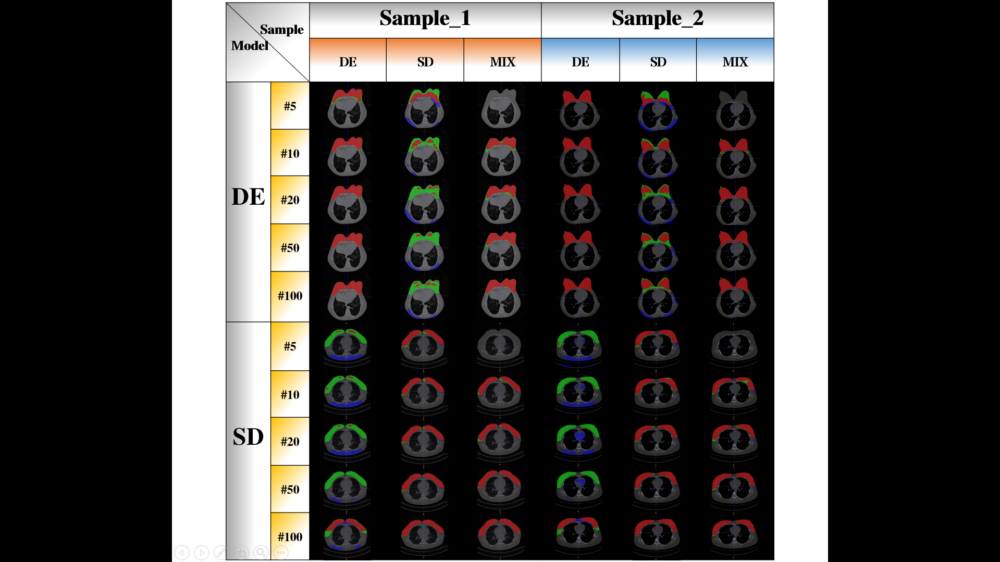
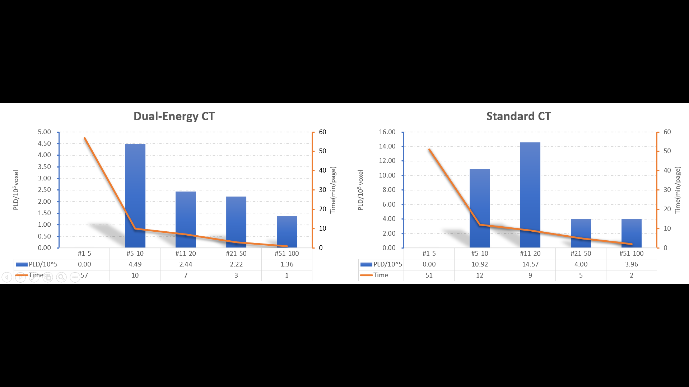

Technical Docs
技术文档
HIL平台模型性能测试与标注效率评估数据
手工标注时间统计
以下数据展示了在不同规模的训练数据集下，模型预测结果的人工修正时间。随着训练数据量增加，模型预测精度持续提升，人工修正时间显著缩短。
DE 数据集 — 双能CT (Dual Energy)| 手动修改的CT类别 (DE) | 修改的CT图数量 | 花费时间 |
|---|---|---|
| 手工从头标注 | 1张 | 1小时2分钟 |
| 在5个数据集模型预测结果上修改 | 5张 | 50分钟（约10分钟/张） |
| 在10个数据集模型预测结果上修改 | 10张 | 1小时6分钟（约6-7分钟/张） |
| 在20个数据集模型预测结果上修改 | 30张 | 1小时32分钟（约3分钟/张） |
| 在50个数据集模型预测结果上修改 | 50张 | 53分钟（约1分钟/张） |
| 在100个数据集模型预测结果上修改 | 80张 | 20分钟（仅挨个查看） |
| 手动修改的CT类别 (SD) | 修改的CT图数量 | 花费时间 |
|---|---|---|
| 手工从头标注 | 1张 | 40分钟 |
| 在5个数据集模型预测结果上修改 | 5张 | 1小时（约12分钟/张） |
| 在10个数据集模型预测结果上修改 | 10张 | 1小时40分钟（约10分钟/张） |
| 在20个数据集模型预测结果上修改 | 30张 | 2小时30分钟（约5分钟/张） |
| 在50个数据集模型预测结果上修改 | 50张 | 2小时30分钟（约3分钟/张） |
| 在100个数据集模型预测结果上修改 | 80张 | 40分钟（约0.5分钟/张） |
核心结论：随着模型训练数据量从5个增至100个，单张CT的修正时间大幅下降：DE数据集从手工标注1小时/张降至仅需查看确认；SD数据集从40分钟/张降至约30秒/张。充分体现了HIL平台"人机协同"迭代优化的核心价值。
模型性能评估
以下图表展示了HIL平台在不同数据集规模下的模型性能指标和效率对比。
图1：不同规模数据集模型分割结果对比
相同训练轮次下，使用不同规模（5/10/20/50/100）数据集训练的3D UNet模型对同一幅医学影像的分割结果，以及与专家标注（Ground Truth）的差异对比。

图1：随训练数据量增加，模型分割结果逐渐逼近专家标注水平
图2：工作效率与精确度分析
HIL方法与传统纯人工标注方法的标注效率与分割精确度（Dice系数）的对比分析。

图2：标注效率（张/小时）与Dice系数的柱状图+折线图综合对比
图3：模型标注质量评估参数
对训练模型的分割标注结果进行的多项评价指标分析，包括HD95（Hausdorff距离95分位数）、Dice系数、PLD（模型分割与专家标注相差的像素个数）、ASD（平均表面距离）等。

图3：模型标注质量的多维度量化评估（HD95 / Dice / PLD / ASD）